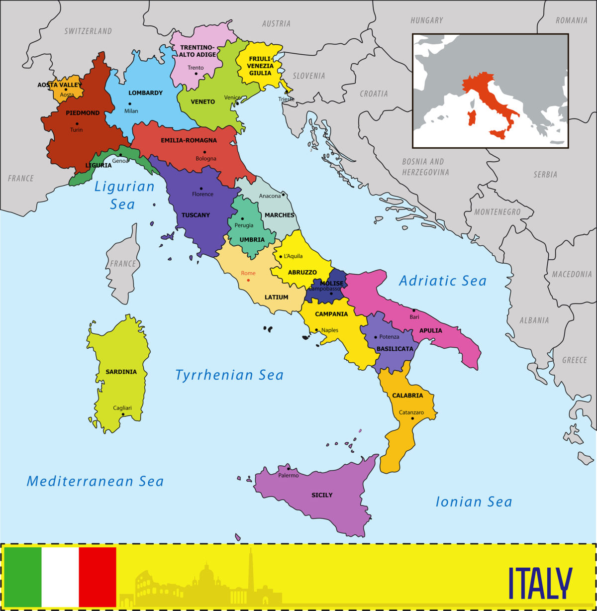

Regions of Italy
The regions of Italy (Italian: regioni d'Italia) are the first-level
administrative divisions of the Italian Republic, constituting its second NUTS administrative level.
There are twenty regions, five of which have higher autonomy than the rest.
Under the Constitution of Italy, each region is an autonomous entity with defined powers.
With the exception of the Aosta Valley (since 1945) and Friuli Venezia Giulia (since 2018),
each region is divided into a number of provinces (province).
History
During the Kingdom of Italy, regions were mere statistical districts of the central state.
Under the Republic, they were granted a measure of political autonomy by the 1948 Italian Constitution.The original draft list comprised the Salento region (which was eventually included in Apulia); Friuli and Venezia Giulia were separate regions, and Basilicata was named Lucania. Abruzzo and Molise were identified as separate regions in the first draft, but were later merged into Abruzzi e Molise in the final constitution of 1948, before being separated in 1963.
Implementation of regional autonomy was postponed until the first Regional elections of 1970.The ruling Christian Democracy party did not want the opposition Italian Communist Party to gain power in the regions where it was historically rooted (the red belt of Emilia-Romagna, Tuscany, Umbria and the Marches).
 Regions acquired a significant level of autonomy following a constitutional reform in 2001 (brought about by a centre-left government and confirmed by popular referendum),
which granted them residual policy competence. A further federalist reform was proposed by the regionalist party Lega Nord and in 2005, the centre-right government led by
Silvio Berlusconi proposed a new reform that would have greatly increased the power of regions.
The proposals, which had been particularly associated with Lega Nord, and seen by some as leading the way to a federal state, were rejected in the 2006 Italian constitutional referendum by 61.7% to 38.3%. The results varied considerably among the regions,
ranging from 55.3% in favour in Veneto to 82% against in Calabria.
Regions acquired a significant level of autonomy following a constitutional reform in 2001 (brought about by a centre-left government and confirmed by popular referendum),
which granted them residual policy competence. A further federalist reform was proposed by the regionalist party Lega Nord and in 2005, the centre-right government led by
Silvio Berlusconi proposed a new reform that would have greatly increased the power of regions.
The proposals, which had been particularly associated with Lega Nord, and seen by some as leading the way to a federal state, were rejected in the 2006 Italian constitutional referendum by 61.7% to 38.3%. The results varied considerably among the regions,
ranging from 55.3% in favour in Veneto to 82% against in Calabria.
Status

Every region has a statute that serves as a regional constitution, determining the form of government and the fundamental principles of the organization and the functioning of the region, as prescribed by the Constitution of Italy (Article 123). Although all the regions except Tuscany define themselves in various ways as an "autonomous Region" in the first article of their Statutes, fifteen regions have ordinary statutes and five have special statutes, granting them extended autonomy.
Regions with ordinary statute
These regions, whose statutes are approved by their regional councils, were created in 1970, even though the Italian Constitution dates back to 1948. Since the constitutional reform of 2001 they have had residual legislative powers: the regions have exclusive legislative power with respect to any matters not expressly reserved to state law (Article 117). Yet their financial autonomy is quite modest: they keep just 20% of all levied taxes, mostly used to finance the region-based healthcare system.